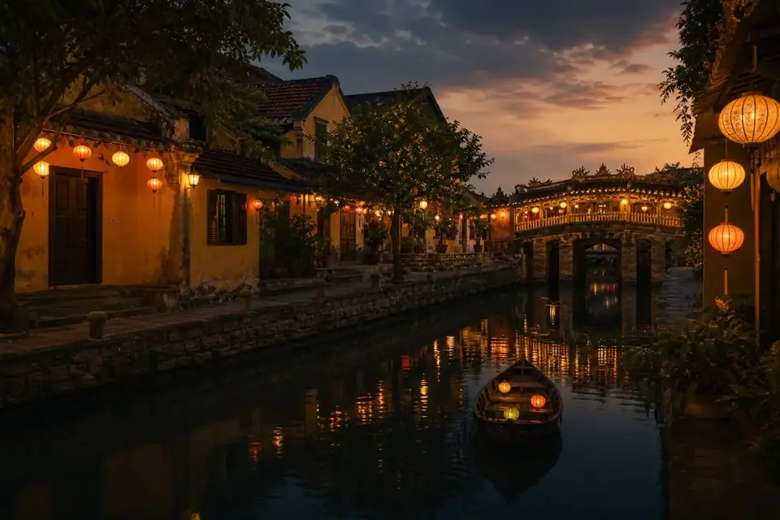

Безопасный старт
Проверенное решение для уверенной релокации и стабильного заработка во Вьетнаме.
Бизнес-инкубатор 2026
Освойте востребованную профессию организатора туров и гида полностью онлайн, ещё до того, как соберёте чемоданы.
Готовое решение
Проверенное решение для уверенной релокации и стабильного заработка во Вьетнаме.
Программа создана профессионалами, которые работают в туризме более 12 лет и знают рынок изнутри.
Только рабочие связи, готовые сценарии, маршруты, карты локаций и понятные действия на каждый этап.
Фундамент бизнеса
Чёткие сценарии проведения экскурсий, которые помогают исключить накладки и быть на шаг впереди туристических автобусов.
Исторические факты, чамская культура, французская колониальная архитектура и природные локации, которых нет в открытом доступе.
Организуйте и продавайте премиальные туры удалённо по всему Вьетнаму, забирая свою комиссию.
Прямые телефоны проверенных локальных гидов, водителей минивэнов, отелей и владельцев закрытых ресторанов.
VIP-маршруты и зарубежный банкинг
Конструктор туров: научитесь комбинировать внутренние авиарейсы, поезда, трансферы и отели в единый бесшовный VIP-маршрут.
Личная вьетнамская банковская карта: пошаговое руководство по легальному открытию карты в местном банке для каждого ученика.
Полная свобода: возможность принимать оплату от туристов напрямую, минуя посредников.
Экономика
Экологичные допродажи: интеграция в тур VIP-транспорта, услуг профессионального фотографа или ужинов в закрытых ресторанах.
Прямой выход на руководство: закрытые контакты топ-менеджеров крупнейших вьетнамских принимающих агентств для быстрого партнёрства.
Вьетнам в маршрутах

Почему сейчас
иностранных гостей — глобальная цель Вьетнама на 2026 год.
туристов за первое полугодие 2026 года — исторически сильный показатель для региона.
Поток гостей из стран СНГ создаёт устойчивый спрос на профессиональных русскоязычных гидов и организаторов туров.
Истории учеников
«Ужасно боялась лететь в никуда. Благодаря курсу ещё из дома нашла первых трёх клиентов. Поминутные тайминги спасли на первой же экскурсии в Далат — группа была в восторге!»
«Думал, без связей не вклиниться. Но готовая база контактов и фишки по апсейлам дали мощный старт. Делаю сложные туры под ключ и работаю полностью на себя».
Формат участия
Сопровождение «за руку», индивидуальные созвоны, прямая передача контактов и помощь на месте.
Финальный шаг
Количество мест с личным сопровождением на маршрутах и помощью по банковским картам ограничено: 5 человек на поток.
Написать кодовое слово «ВЬЕТНАМ» @movetoviet2026